Rapid changes in weather have quietly confined us indoors. On days of heavy rain, extreme heat or severe cold we simply stay in, and the distance between daily life and the outdoors grows a little wider each year. This shelter asks whether an outdoor room can be conditioned the way an interior is — not by imitating nature, but by moderating it.
A stationary room in a moving place
Yongbi Bridge crosses Jungnangcheon and connects a residential district to a large park. Everything about the place is linear and in motion: people walking, cyclists passing, the river itself. The shelter is placed into that flow as the one thing that does not move — a place to stop, sit and stay, tucked into the leftover ground beneath the elevated road.
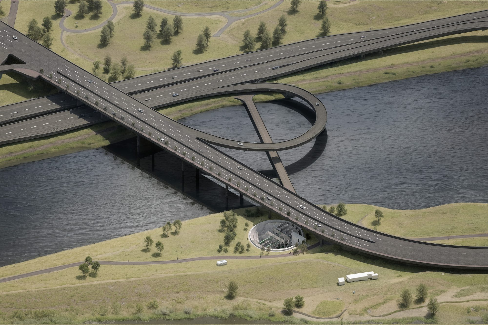
Homeostasis as a building principle
Homeostasis is the ability of a living organism to hold a stable internal state while the world outside keeps changing. It is what lets life survive a changing environment. The shelter borrows the idea directly: rather than sealing the outside out, it keeps adjusting itself so that what reaches a person stays within a comfortable band.
Six elements do the work. A kinetic roof sheds rain and regulates how much outside air comes through. Kinetic platforms rise and fall to meet the sun’s altitude. Rotatable panels decide how much light is reflected into the occupied space and how much is absorbed. A core carries circulation, a spiral stair joins the levels, and a retaining wall holds the ground.
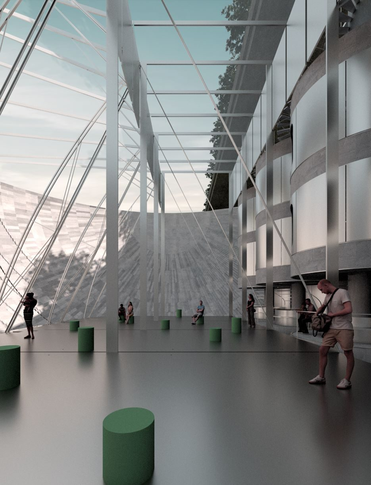
One room, four seasons
The same room is tuned differently through the year. In winter the platform rises to follow a low sun and a high proportion of panels turn to reflect light inward. In spring and autumn the platform settles in the middle with only small adjustments. In summer it drops away from the sun and few panels reflect, letting the rest absorb the heat instead.
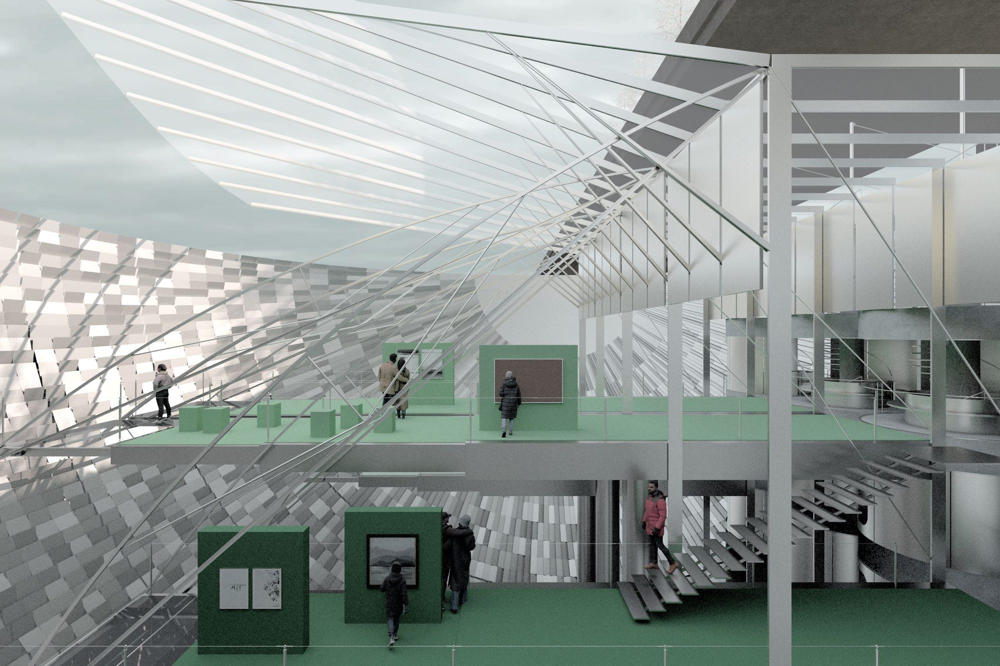
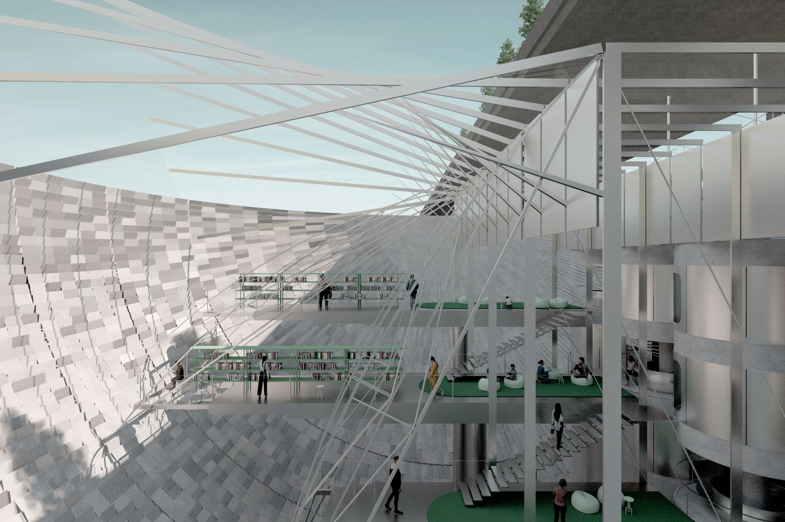
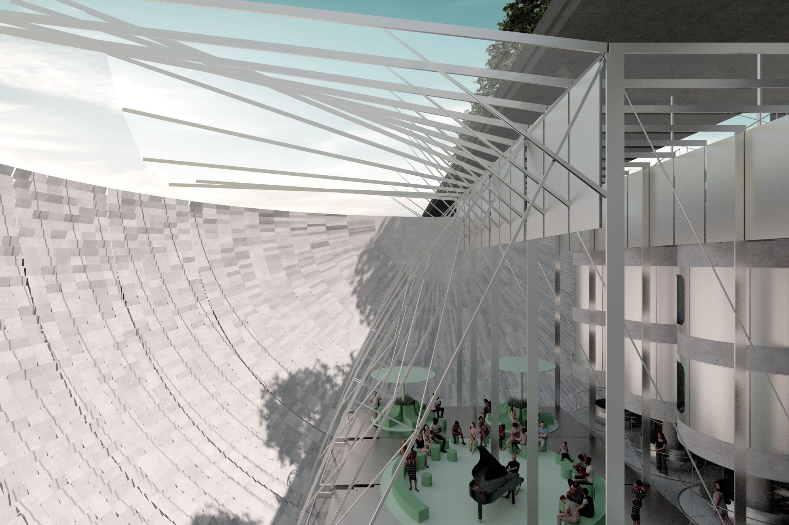
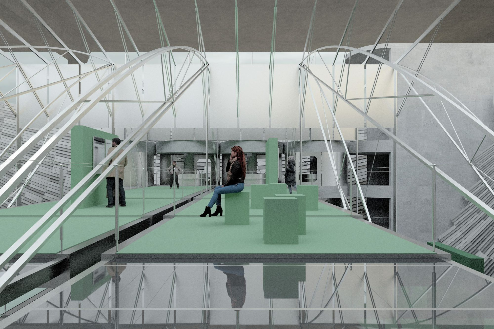
Stacked ground
Because the platforms move, the shelter is read as several grounds stacked over one another rather than as floors in a building. The spiral stair and the core let people choose the level that suits the day, and the section stays open enough that you can always see the others.
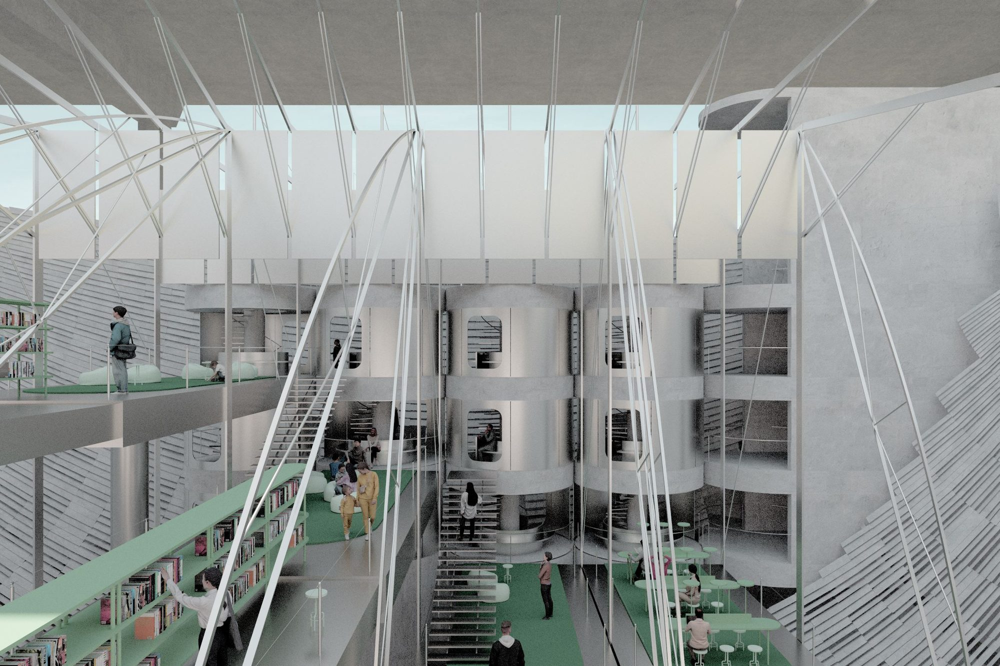
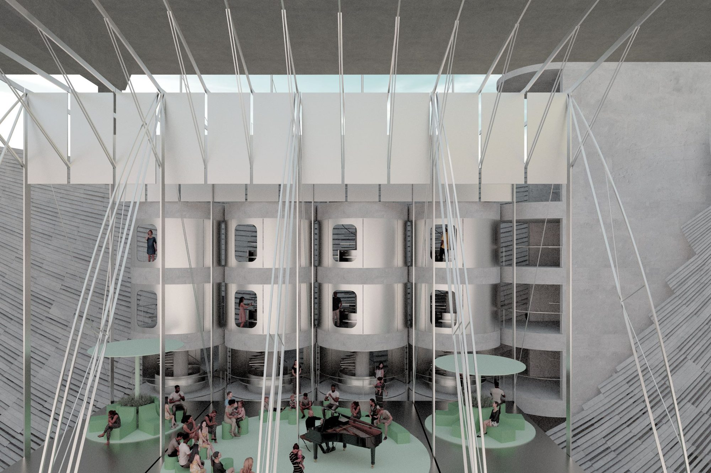
Stenciled scenery
The rotatable panels do more than manage heat. People and trees crossing Yongbi Bridge are caught on their surfaces and thrown back into the room, so the passing traffic of the bridge returns as a slow, stencilled image on the wall. The shelter keeps a deliberate dependence on its surroundings: the weather it moderates is also the thing it shows you.
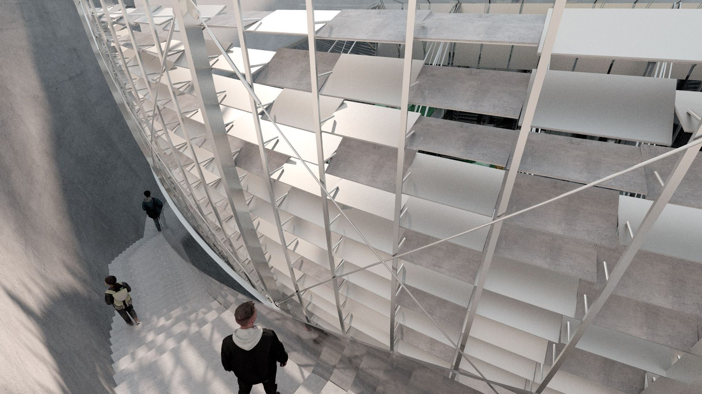
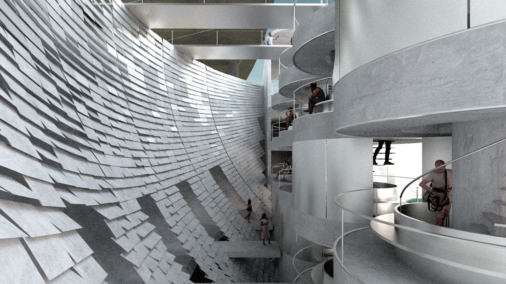
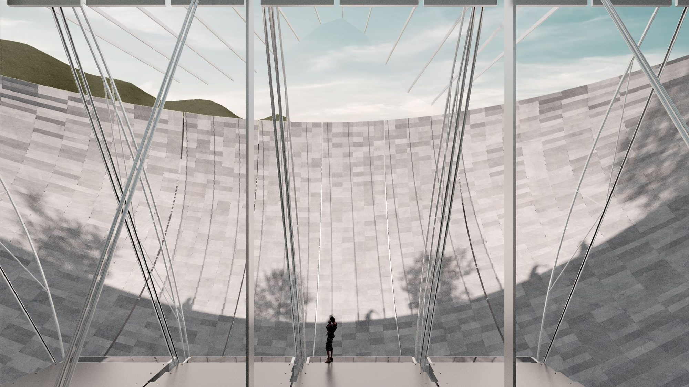